AI Safety, Monitoring, and Trust | For operations leaders
Defensible AI, by design, applied to operations. Resolve issues where they start, decide what matters first, and prove it on one workflow before a larger investment.
What we do
What is different
How it fits / three layers across every business area
Work ordered by value and time left.
TimelinessStaff placed where volume spikes.
CapacityLimits move with quality; owners approve.
ControlRecurring causes ranked across areas.
Cost reductionEach area keeps its own rules, routing and approvals. Managed services handles what remains.
Claims, servicing, contact centre, central ops
Finance and accounting, HR, procurement
Infrastructure, applications, security
Across every business area
Every channel, one format
Validation, mappings, evidence
Where cost falls. Recurring work removed at the source, net of all effort; the test measures it. The other decisions add timeliness, capacity and control.
What a decision layer adds on top of a standardised foundation.
What the decision layer adds
With intake standardised across channels, a decision layer on top turns that data into action: better service levels, shorter cycle times, lower cost to serve.
Work is ordered by its value and the time left, not first in, first out. When volumes surge, overtime, reallocation and limits are weighed against penalties and revenue at risk.
We predict which cases would cause rework, resolve complex exceptions and keep checking quality. Review limits move with quality, inside limits that control owners set and approve.
Each operational decision shows its trade off: penalty avoided, revenue protected, rework prevented, overtime not spent. Leadership gets an auditable view of the value delivered.
Start with one workflow, then extend to every stage where you trade off growth, cost and risk. Decisions are connected, so a change in one area is assessed for its effect on the others.
How the test works
Choose one recurring cause or one review order. Agree the rules it is tested against and what success looks like.
Use sample data and the tools already in use, with Frontier coordinating. Test it on realistic and difficult cases drawn from your own rules.
Specialists verify the serious findings. Compare effort, recurrence and hours per case. Then keep the tools in use, explore Frontier, or stop.
Faculty’s prototyping support builds the example with sample data only: no live systems, and people still approve.
How value is measured
Why Accenture and Faculty
FacultyFrontier, prototyping support, and expertise in AI safety, evaluation and red teaming.
AccentureDelivery across operations, enterprise functions and technology, with risk and regulatory practice to carry a tested approach into the workflows.
Works with the tools and models you already use, including models from our GAO Partnerships: Google, Anthropic and OpenAI. We test Frontier where it adds value.
Tested against your own rules. Every finding becomes an owned action.
How the evidence is produced
Policies, limits and approvals
Realistic and difficult cases
Against the workflows and agents
Every response against your rules
Specialists check serious findings
Scored and audit ready
White outline: people verify. Works across the models you use. Repeated at every release.
What leaders get / a clear picture and a ranked agenda / illustrative
Readiness to test: five checks
Evidence maturity, by layer
Example findings, ranked
Each finding maps to an action with a named owner.
What is tested at each layer
| Layer | What is tested | Evidence kept | Signed off by |
|---|---|---|---|
| Layer 1 Decisions | Recommendations stay inside the limits owners set, and show their reasoning | Decision record with rationale and trade off | Control owners |
| Layer 2 Workflows | Exceptions are classified and routed correctly, and approvals are respected | Graded sample results and approval trail | Workflow owners |
| Layer 3 Systems and data | Inputs are standardised, validated and mapped, with lineage | Validation results and audit trail | Data owners |
You keep this either way
If it works, it scales in 1 process
Where to start
Book a 30 minute scoping call.
With the leaders who own these workflows, we agree the one task to test, the rules it is tested against, and how it will be measured.
Point of contactKedus Bekele, Accenture
Value is measured in the test. Evidence covers the one task tested; a prototype is not a commitment to build.